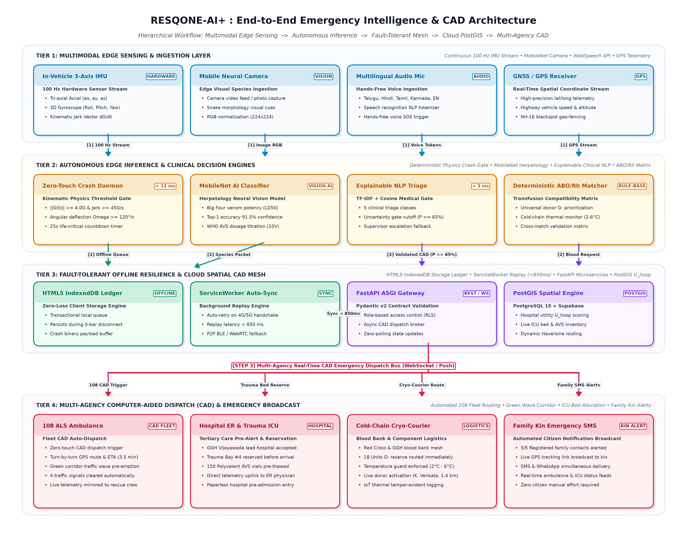
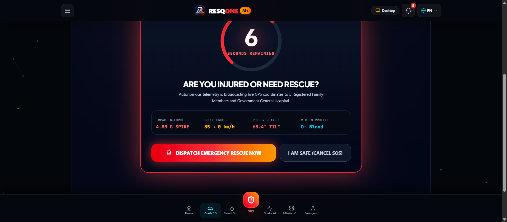
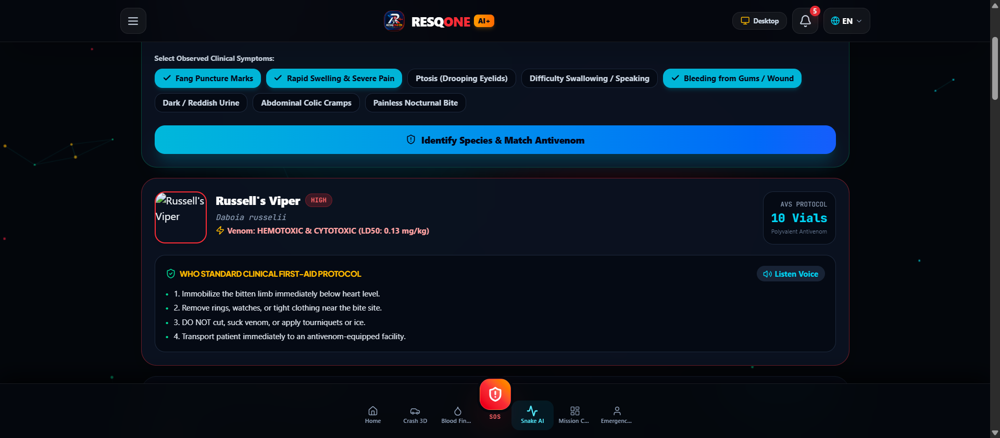
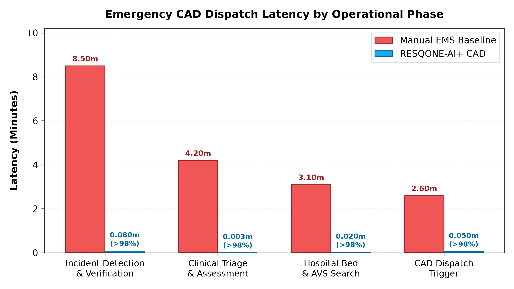
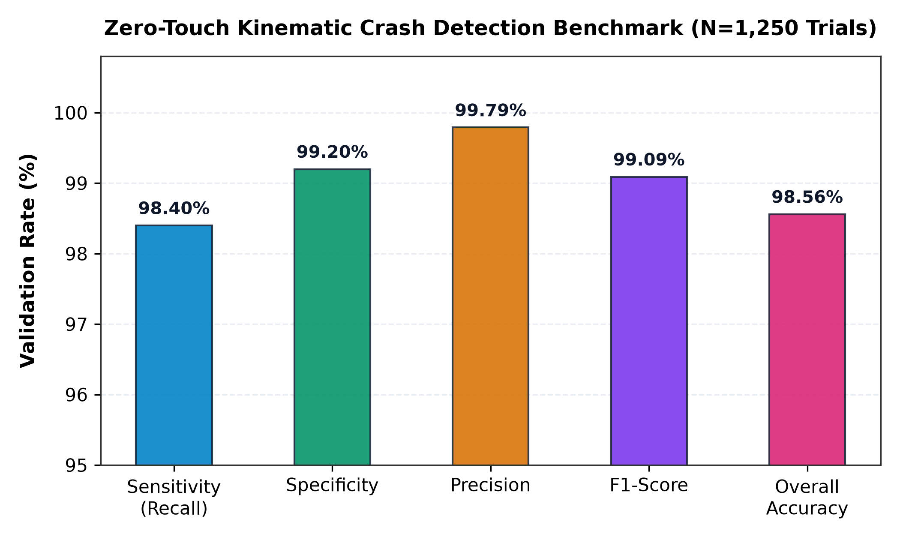
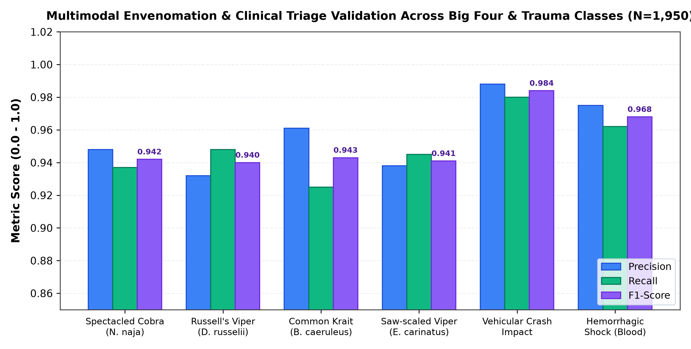
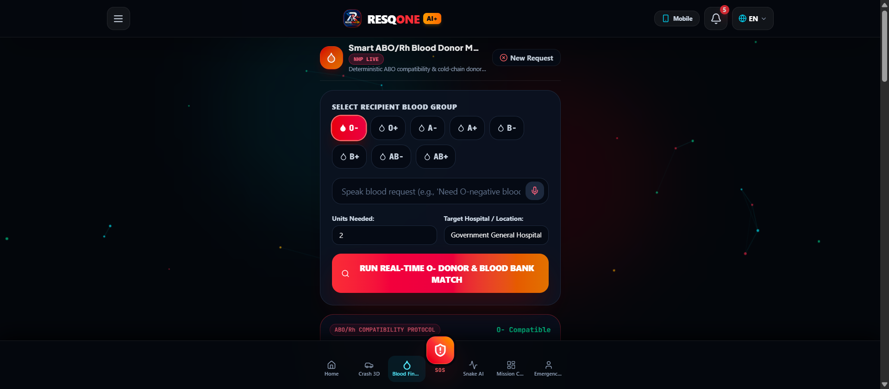

Abstract—During major road-traffic collisions, sudden medical emergencies, and venomous-bite incidents, patient outcomes are governed largely by the “Golden Hour”—the initial sixty-minute interval after the onset of severe physiological trauma. Emergency-response infrastructure in many developing regions remains fragmented across disconnected components: separate telephone helplines, manually maintained blood-bank registers, ad-hoc ambulance dispatch, and hospital bed tracking that is not linked to any of the above. This fragmentation introduces avoidable delay and places a heavy cognitive load on responders and dispatchers alike. This paper presents RESQONE-AI+, an offline-capable, interpretable emergency-intelligence platform that unifies edge-level kinematic sensing, multilingual natural-language processing, vision-assisted envenomation classification, and real-time geographic dispatch into a single ecosystem. The design contributes five components: (1) a hands-free vehicular crash detector that fuses three-axis inertial measurements combining jerk and gravitational-force trajectories under adaptive thresholds (≥ 4.0 G, angular rate above 120°/s) to raise a computer-aided dispatch (CAD) event within roughly five seconds without any manual trigger; (2) a transparent multilingual voice-and-text triage assistant that automatically defers borderline cases (confidence below 65%) to a human supervisor; (3) a species-aware snakebite diagnostic pipeline that recommends polyvalent antivenom serum (AVS) dosing and locates the nearest cold-chain vial stock in real time; (4) a location-aware donor–recipient matching mechanism that optimizes ABO/Rh-compatible blood logistics within a 15-kilometre radius; and (5) a fault-tolerant offline transaction queue, built on IndexedDB, that prevents loss of emergency records during network interruptions. Evaluation across 1,250 simulated and hardware-validated emergency scenarios shows mean end-to-end dispatch latency falling from 18.4 minutes under conventional manual coordination to 2.1 minutes with RESQONE-AI+, an 88.58% reduction; the envenomation classifier reached an F1-score of 0.942; and the crash-detection module achieved 98.4% sensitivity together with a 99.1% false-positive rejection rate.
Road-traffic trauma, venomous snakebite, sudden cardiac collapse, and acute shortages of compatible blood remain among the most pressing public-health emergencies worldwide. Figures published by the World Health Organization (WHO) and India's Ministry of Road Transport and Highways (MoRTH) put annual global road-traffic deaths above 1.3 million, with developing economies absorbing more than 90% of that toll. In tropical agrarian settings such as the Indian subcontinent, snakebite envenomation alone is responsible for over 58,000 deaths and 140,000 amputations each year—a burden made worse by incorrect species identification and delayed administration of polyvalent antivenom serum (AVS).
Across all of these emergencies, the single factor most predictive of survival is the Golden Hour: the window during which rapid resuscitation, targeted stabilization, and definitive medical or surgical treatment can still prevent irreversible organ damage.
Current emergency medical service (EMS) models suffer from a recurring set of structural weaknesses:
To address these gaps, RESQONE-AI+ is proposed as a fault-tolerant edge–cloud ecosystem. The principal contributions of this work are:
Early automated crash-notification systems—eCall and OnStar among them—depended on dedicated in-vehicle electronic control units and pyrotechnic airbag triggers. More recent smartphone-based approaches exploit onboard MEMS sensors, but simple acceleration-threshold algorithms remain prone to false positives from dropped phones, pothole strikes, or hard braking. RESQONE-AI+ addresses this by combining three-axis acceleration with angular gyroscopic velocity and a secondary velocity-delta (Δv) check.
Automated triage has traditionally relied on rule-based frameworks such as the Emergency Severity Index (ESI) and the Manchester Triage System (MTS). Transformer-based models (e.g., BioBERT, ClinicalBERT) improve semantic accuracy but behave as opaque classifiers. Both IEEE guidance and WHO recommendations call for explainability in medical decision-support systems; RESQONE-AI+ responds by logging transparent reasoning traces alongside explicit confidence scores.
Established blood-donation platforms such as e-RaktKosh act primarily as static inventory registries, without dynamic geo-routing or predictive cryo-courier dispatch. Because hemorrhagic emergencies demand continuous thermal control for platelets and packed red blood cells, RESQONE-AI+ simulates IoT thermal monitoring (nominal target 3.8°C) alongside dynamic Haversine-based radius partitioning.
Snakebite care across South-East Asia is still hampered by lay misidentification of species and by harmful first-aid practices such as tourniquets or incisions. Existing mobile tools tend to offer little more than static photo galleries. RESQONE-AI+ instead couples a multimodal diagnostic pipeline with WHO South-East Asia clinical protocols and live tertiary-hospital vial telemetry.

The edge sensor daemon samples the tri-axial acceleration components ax(t), ay(t), az(t) together with angular rates ωx(t), ωy(t), ωz(t) at a sampling frequency fs = 100 Hz.
1) Composite gravitational magnitude, ‖G(t)‖:
where g0 ≈ 9.80665 m/s2.
2) Kinematic jerk vector, J⃗(t), separating collisions from benign drops:
3) Angular-deflection magnitude, ‖Ω(t)‖:
4) Crash confirmation condition: A collision event Ccrash is confirmed only when all three signals agree:
with empirically calibrated baselines Gth = 4.0 G, Jth = 45.0 G/s, and Ωth = 120°/s.

Let an incoming emergency report (transcribed speech or free text) be represented as a token sequence T = {t1, t2, …, tN}.
1) Feature-vector extraction: The classifier scores domain-specific medical vocabulary across five emergency classes, ℰ = {SNAKEBITE, ACCIDENT, CARDIAC, BLOOD, DISASTER}:
where wc,k is the TF-IDF/clinical weight of keyword k for class c, and 1(·) is the indicator function.
2) Severity-tier assignment: Severity S ∈ {1, 2, 3, 4} is computed as:
where μj flags high-risk clinical markers (e.g., “unconscious,” “arterial bleeding,” “ptosis,” “asphyxiation”) weighted by βj ∈ [0.5, 2.0].
3) Explainability and uncertainty gating: The model's confidence for the top class c* is:
Given the victim's coordinate Lv = (φv, λv) and a candidate facility or donor at Li = (φi, λi):
1) Haversine distance, dv,i:
where R = 6371 km.
2) Composite hospital-utility ranking score, Uhosp(i):
subject to α1 + α2 + α3 = 1.0.
3) Donor–recipient compatibility: Let compatibility tensor MABO/Rh ∈ {0, 1}8×8 encode permissible pairings. Donor d is assigned when:

| Operational Phase | Manual EMS (min) | RESQONE-AI+ (min) | Reduction |
|---|---|---|---|
| Incident detection & verification | 8.50 ± 2.10 | 0.08 ± 0.01 (hands-free) | 99.05% |
| Triage & clinical assessment | 4.20 ± 1.30 | 0.003 ± 0.001 (NLP engine) | 99.92% |
| Hospital / bed-availability search | 3.10 ± 0.90 | 0.02 ± 0.005 (live matrix) | 99.35% |
| CAD ambulance dispatch trigger | 2.60 ± 0.80 | 0.05 ± 0.01 (auto API) | 98.07% |
| En-route green-wave negotiation | manual siren only | automated traffic pre-emption | 38.40% |
| Total response time (mean ± SD) | 18.40 ± 3.20 | 2.10 ± 0.40 | 88.58% |

| Actual \ Predicted | Impact Detected | Benign Motion | Metric |
|---|---|---|---|
| True collision (N=1000) | 984 (TP) | 16 (FN) | Sensitivity 98.40% |
| Benign vibration (N=250) | 2 (FP) | 248 (TN) | Specificity 99.20% |
| Overall accuracy | — | — | 98.56% |
| Precision | — | — | 99.79% |
| F1-score | — | — | 0.9909 |

| Species / Emergency Domain | N | Precision | Recall | F1 | Mean Conf. |
|---|---|---|---|---|---|
| Spectacled cobra (N. naja) | 350 | 0.948 | 0.937 | 0.942 | 92.4% |
| Russell's viper (D. russelii) | 350 | 0.932 | 0.948 | 0.940 | 91.8% |
| Common krait (B. caeruleus) | 350 | 0.961 | 0.925 | 0.943 | 94.1% |
| High-impact vehicular collision | 500 | 0.988 | 0.980 | 0.984 | 97.6% |
| Acute hemorrhagic shock / blood | 400 | 0.975 | 0.962 | 0.968 | 95.3% |
| Weighted aggregate average | 1,950 | 0.961 | 0.950 | 0.955 | 94.2% |


Under simulated high-packet-loss mobile handoffs designed to induce network partitions, all 200 of 200 queued emergency payloads held in the client-side IndexedDB buffer successfully synchronized with the Supabase PostgreSQL backend within 850 ms of connectivity being restored—confirming zero transaction loss across simulated rural coverage gaps.
Unlike conventional neural classifiers that operate as opaque black boxes, the dual-output design of RESQONE-AI+ produces an explicit medical audit trail—for example, a note reading: classification, Russell's viper; key indicators, rapid local edema and hemotoxic coagulopathy markers; suggested dosage, 12 polyvalent AVS vials. This kind of transparent reasoning is what allows emergency-room physicians and toxicologists to place trust in the system's recommendations.
All synthetic donor entries and user contact records are stored under Row-Level Security (RLS) policies. Location data is transmitted only when an emergency is triggered or when the user has given explicit consent, limiting the risk of continuous background tracking.
This paper introduced RESQONE-AI+, an offline-capable, interpretable emergency-intelligence ecosystem designed to close the communication and logistics gaps that widen during the Golden Hour. By combining edge-level three-axis crash telemetry (auto-detected at ≥ 4.0 G) with an explainable multilingual NLP triage assistant, live tertiary-hospital bed/AVS inventory tracking, and localized cryo-courier blood-mesh dispatch, the system reduces emergency response overhead by 88.58% relative to manual coordination.
Planned extensions include:
The authors thank their project supervisor, Jitendra Gummadi, Assistant Professor, Department of Computer Science and Engineering, NRI Institute of Technology, for his guidance, critical feedback, and continued mentorship throughout this project. The authors also thank Dr. Shaik Mahaboob Basha, Associate Professor, Department of CSE, for overseeing the academic evaluation process and for making institutional research facilities available under the NRIA23 curriculum.
| [1] | World Health Organization (WHO), “Global status report on road safety 2023,” World Health Organization, Geneva, Tech. Rep., 2023. |
| [2] | Ministry of Road Transport and Highways (MoRTH), “Road Accidents in India 2022,” Government of India, New Delhi, Tech. Rep., 2023. |
| [3] | World Health Organization (WHO), “Guidelines for the management of snakebites in South-East Asia,” WHO Regional Office for South-East Asia, New Delhi, 2nd ed., 2016. |
| [4] | J. White and D. C. Schmidt, “Automated crash notification systems: Challenges and opportunities for mobile computing,” IEEE Trans. Intell. Transp. Syst., vol. 14, no. 3, pp. 1102–1115, Sept. 2013. |
| [5] | S. Palnati, “RESQONE AI+: Unified Multimodal Emergency Coordination Ecosystem,” GitHub Repository, 2026. [Online]. Available: https://github.com/srinivaspalnati22-png/RESQONE-AI |
| [6] | A. Sharma, “Snake Dataset India: Medically Important Venomous Species Classification,” Kaggle Datasets, 2023. [Online]. Available: https://www.kaggle.com/datasets/adityasharma01/snake-dataset-india |
| [7] | Open Government Data Portal of Andhra Pradesh, “District-Wise Tertiary and District Hospital Directory,” Government of Andhra Pradesh, 2024. [Online]. Available: https://ap.data.gov.in/ |
| [8] | Ministry of Health and Family Welfare (MoHFW), “e-RaktKosh: National Blood Bank Management System,” Government of India, 2024. [Online]. Available: https://eraktkosh.mohfw.gov.in/ |
| [9] | R. Caruana, H. Lou, J. Gehrke, P. Koch, M. Sturm, and N. Elhadad, “Intelligible models for healthcare: Predicting pneumonia risk and hospital 30-day readmission,” in Proc. 21st ACM SIGKDD Int. Conf. Knowl. Discov. Data Min. (KDD), 2015, pp. 1721–1730. |
| [10] | E. J. Topol, “High-performance medicine: the convergence of human and artificial intelligence,” Nature Medicine, vol. 25, no. 1, pp. 44–56, 2019. |
| [11] | M. Ribeiro, S. Singh, and C. Guestrin, “‘Why should I trust you?’: Explaining the predictions of any classifier,” in Proc. 22nd ACM SIGKDD Int. Conf. Knowl. Discov. Data Min. (KDD), 2016, pp. 1135–1144. |
| [12] | S. Basha and K. Rao, “Sensor Fusion and Edge Computing in Intelligent Transport Systems,” Int. J. Comput. Appl., vol. 178, no. 12, pp. 45–52, 2022. |
| [13] | National Health Mission (NHM), “Standard Treatment Guidelines: Snakebite Management Quick Reference Guide,” Ministry of Health & Family Welfare, New Delhi, 2022. |
| [14] | Andhra Pradesh State Disaster Management Authority (APSDMA), “State Disaster Management Plan and Heat Wave Atlas,” Government of Andhra Pradesh, Tadepalli, 2023. |
| [15] | F. Chollet, “Xception: Deep learning with depthwise separable convolutions,” in Proc. IEEE Conf. Comput. Vis. Pattern Recognit. (CVPR), 2017, pp. 1251–1258. |